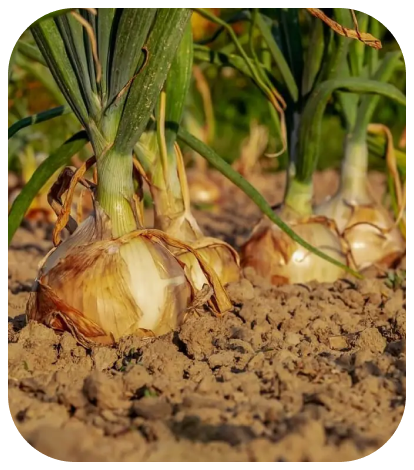
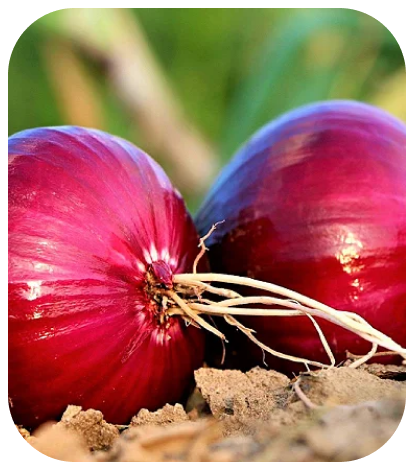
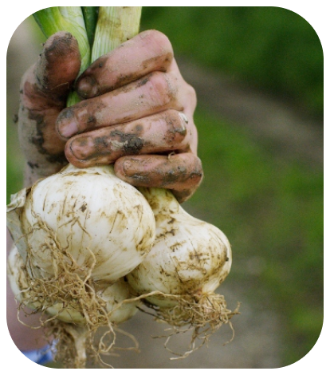

menu
Login/Cadastro
Home
Blog
Quem somos
Fale Conosco
Login/Cadastro
Home
Blog
Quem somos
Fale Conosco
PODA
SOLO
ADUBAGEM
PRAGAS E DOENÇAS



Cebola
Cebola
A cebola (Allium cepa) é um vegetal de sabor marcante e presença indispensável na culinária de diversas culturas ao redor do mundo. Originária da Ásia Central, a cebola é cultivada há milhares de anos e é apreciada tanto pelo seu sabor característico quanto pelos seus benefícios à saúde.
A cebola pertence à família das Liliáceas e é cultivada em uma ampla variedade de climas e regiões. Ela possui um bulbo composto por camadas sobrepostas, que armazena nutrientes e dá forma à planta. Dependendo da variedade, a cebola pode ter diferentes tamanhos, cores e níveis de intensidade de sabor. As variedades mais comuns incluem a cebola branca, amarela e roxa.
Cultivar cebolas requer cuidados específicos. A planta é geralmente cultivada a partir de sementes ou bulbos. O cultivo a partir de sementes requer o plantio das sementes em um substrato adequado e o transplante das mudas para o local definitivo após o desenvolvimento. Já o cultivo a partir de bulbos envolve o plantio direto dessas estruturas no solo, com a parte superior para fora.
A cebola prospera em solos bem drenados e ricos em matéria orgânica. Ela requer exposição solar direta por várias horas diárias para um crescimento saudável. Além disso, é importante fornecer água regularmente, especialmente durante os períodos de crescimento ativo. No entanto, é fundamental evitar o encharcamento do solo, pois o excesso de umidade pode levar ao apodrecimento das raízes.
Além do seu sabor característico, a cebola é valorizada por seus benefícios à saúde. Ela é rica em nutrientes essenciais, como vitaminas C e B6, folato, potássio e antioxidantes. Esses compostos ajudam a fortalecer o sistema imunológico, promover a saúde cardiovascular, regular a pressão arterial e combater os danos causados pelos radicais livres no organismo.
Na culinária, a cebola desempenha um papel fundamental como tempero e ingrediente base em uma variedade de pratos. Ela pode ser consumida crua em saladas, adicionada a sopas, ensopados, refogados e molhos, e também pode ser caramelizada para realçar seu sabor adocicado. A cebola confere profundidade e complexidade aos pratos, além de ser um componente essencial em muitas receitas tradicionais ao redor do mundo
Embora a cebola seja geralmente uma planta resistente, ela pode ser suscetível a algumas pragas e doenças, como a mosca-da-cebola e fungos que causam podridão dos bulbos. Para prevenir e controlar esses problemas, é importante adotar medidas adequadas de manejo integrado de pragas e doenças, como rotação de culturas, monitoramento regular das plantas e aplicação de medidas preventivas, como pulverização de fungicidas quando necessário.